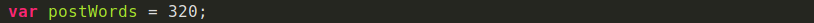
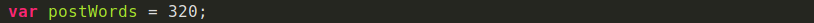

Una buena práctica para escribir código: nombrar elementos
¿Les ha pasado que están súper inspirados escribiendo código pero repentinamente necesitan una luz divina que les diga
qué nombre ponerle a la variable que
están a punto de escribir?
Como Frontend, hay tantas cosas que debo nombrar en mi día: clases para cada elemento HTML, variables en Stylus que puedan se reutilizables,
componentes, archivos, funciones... Tengo que poner a volar mi imaginación para poder lograrlo.
A pesar de que es algo que depende totalmente de nosotros y no hay una forma estrictamente correcta o incorrecta de hacerlo, nombrar cada elemento es un trabajo
en el que debemos poner empeño, pues se verá impactado en la organización y mantenibilidad de nuestro código.
Fanny Team Plazi. Si quieres una carrera en Frontend, empieza por Curso de desarrollo Web y luego el Curso de Responsive Design.
Lo más importante es el nombre que le asignes siempre refleje el trabajo que está haciendo, de esta forma podemos incluso reducir la necesida
cada línea de código con su funcionamiento.
A continuacio algunos consejos que hay que segui para evitar algún desastre a la hora de nombrar un elemento en tu código.
- Nombres descriptivos
- Nombres conformados por un conjunto de palabras
- Longitud de el nombre asignado
Nombres descriptivos
Abreviar nombres puede que en algunos casos no sea tan buena idea. Seguramente con el paso del teimpo o cuando un nuevo desarrollador tenga que darle
mantenimiento a tu código habrá quedado en el olvido lo que la variable represebta. Lo ideal es usar utilizar nombres que describan la funcionalidad de nuestro
código
Por ejemplo, es mucho más descriptivo escribir:

Que:

Nombres conformados por un conjunto de palabras
Generamente los lenguajes de programación no permiten espacios en las variables. Sin embargo hay distinto métodos para separar el conjunto de plabras que
conforman una variable y que de esta manera logren ser más legibles. Esto se puede hacer capitalizando cada palabra agrupada (camelCase) o separando cada
palabra con underscore
(snake_case).e_case)
Por ejemplo:
 o

o

La longitud de el nombre asignado
A pesar de que los nombres de las variables cortos deben ser sutituidos por nombres mas largos y descriptivos, no quiere decir que tenemos que usar
frases compĺetas.
Es importante que el nombre describa que es lo que el codigo asignado hace y no como lo hace. Utilizar un nombre largo puede incluso ser mas suceptible a errores tipograficos a la hora de escribirlo. Se diuc que la la longitud recomendable es de 2 a 4 palabras o entre 8 y 20 caracteres.
En conclusion nombrar elementos no es digicil, mas bien es un super porder o habilidad que va mejorando con la practica. Nosotrso como desarrolladores tenemos la responsabilidad de hacerlo lo mejor posible.
si recien comienzas a programar, te invito al Curso de programacion basica para empezar a implementar esto en tus proyectos, Y si te llevas ya tiempó
programando sin hacer usop de ellos compratenoss como te va sigfuiendo estas recomentadicones. Estoy segura que los desarrolladores que se topen con tu codigo en el futuro te lo agraderecean.